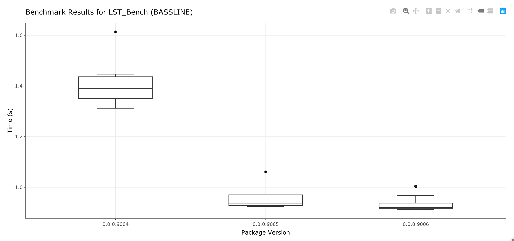

BenchJournal is a lightweight tool to keep track of benchmarks for a package as it is developed. Automatic and manual benchmarking is supported.
Installation
You can install the development version of BenchJournal with:
# install.packages("devtools") devtools::install_github("nathansam/BenchJournal")
Using BenchJournal
Intial setup
BenchJournal supports two workflows.
- Automatic: benchmarks will be ran whenever code is pushed to a git repository. commit hashes will be used to tag the version of code.
- Manual: Benchmarks will be run when the user runs
BenchJournal::NewEntry(). The version of the package, as listed in the DESCRIPTION file, will be used to tag the version of the code.
BenchJournal can be set up using a simple function which will create the folders and files needed to journal your package’s progress in /man/BenchJournal/. These folders/ files will be added to your .Rbuildignore. When this function is ran, the user will interactively be asked if they wish to use the automatic or manual workflow.
BenchJournal::Init()
Inside /man/BenchJournal/, you will now find a folder scripts. Save any R scripts to this directory which you wish to benchmark (I.E. a script which uses the functions in your package which you are intending to improve the performance of).
Adding entries to your journal
If you are using the automatic workflow then simply push commits to benchmark your scripts.
If you are using the manual workflow then run NewEntry() for the first time. After you have updated your code, update the version of your package, and re-run NewEntry to add the updated results to your journal.
BenchJournal::NewEntry()
Plotting your results
An interactive boxplot of your benchmark results using ggplot and plotly can be generated:
BenchJournal::JournalBoxPlot()
